De: La Frikipedia, la enciclopedia extremadamente seria.
De: La Frikipedia, la enciclopedia extremadamente seria. De: La Frikipedia, la enciclopedia extremadamente seria.
.jpg/150px-muerto_3(2).jpg)
|
Muerto
El autor de este artículo, al parecer, se ha ido a una de sus citas al WC y suponemos que murió como el desdichado de aquí a la izquierda. Así que en su memoria, no seas cabrón, ponle más chorradas al artículo. |
Juego clásico de mesa, principal diversión de niños, jóvenes, mayores, viejos y cadáveres. Se basa en el uso de un mazo de cartas ganar una partida y conseguir todas las fichas, dinero o chicas que haya sobre la mesa de apuestas. Actualmente es la principal diversión en las residencias de ancianos (pura marcha).
Los orígenes de este grandioso juego se remontan al antiguo egipto. En la serie-documental tu-te-oh se narran al detalle los inicios del juego: un grupo de faraones endeudados hicieron cartas tamaño persona de piedra para jugar, ganar apuestas y hacerse ricos. No obstante, las cartas tenían demasiado poder, y los dioses se vieron obligados a reducirlas a tamaño palma de la mano. El juego se rescató durante la edad media como método de predicción del futuro: el poder de las cartas permite saber el futuro sin tener que recurrir a DeLoreans o a Cahloh Jezuh. Actualmente, el tute suele usarse en campeonatos en residencias de ancianos, pues sólo los más viejos y experimentados conocen el poder de todas las invocaciones, combos y demás gilipolleces típicas del juego.
He aquí la lista de complicadas y dificultosas reglas que rigen este diabólico juego:
| Imagen | Uso |
|---|---|
| 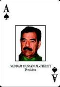 | |
| 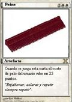 | |
| 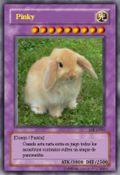 | |
| 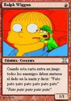 | |
| 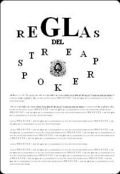 | |
| 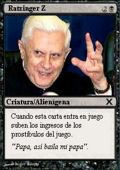 | |
| 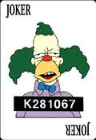 | |
| 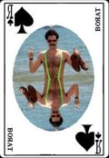 | |
| 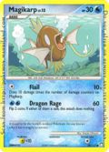 | |
| 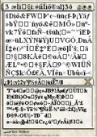 | |
| 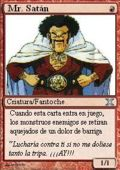 | |
| 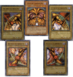 | |
| 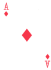 | |
| 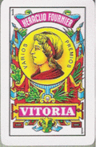 | |
| 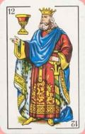 |
El tute posee gran cantidad de variantes que pueden variar de un asilo a otro o de una dimensión alterna con hipnosapos pupulando por las calles a otras. Ahora ofrecemos las reglas de unas cuantas de ellas.
Se juega igual que el tute normal pero cada vez que alguien pierde una mano los demás deben cortársela de verdad usando machetes especialmente pensados para eso.
Además es necesaria una cabra muy gorda a la que sacrificar a Satán en caso de que se produzca un triple tutetísimo cuando alguien juege el dragón de ojos drogados junto una carta cualquiera del uno atack. Si esto ocurre una legión de demonios ocupará la mesa de juego declarando ganador al que mee más lejos para luego hacer un festín con sus genitales.
Para esto es necesario jugar una partida en dos veces. En la primera se debe jugar hasta romper el continuo espacio tiempo para que un centollo devorador de almas venga a nuestro mundo y fornique tres días y tres noches con una señorita de moral distraída que previamente se ha depositado sobre la mesa y la deje preñada.
Nueve meses después se sacará al vástago de esa unión impía quitando el envoltorio mediante cesarea o muchas balas, a gusto del consumidor, para luego jugar alrededor del reciennacido hasta que se convierta en un adolescente atrofiado y antisocial momento en el que habrá que luchar a muerte contra él en el reino de las vacas voladoras.
El ganador será el que consiga reunir más dientes del hijo puta antes de que una vaca giante voladora caiga sobre los demás y les aplaste. El premio no será otro que una eternidad de dolor y sufrimiento en Barbaterl donde será torturado por Chiquito hasta que le venza en una partida de tute. Y Chiquito nunca pierde.
Es necesario jugarlo en un cementerio y sin pantalones. Todos los participantes tomarán varios litros de laxante y el primero en jiñar sus propios intestinos será el encargado de recitar el mensaje secreto de la Carta Rara para que los muertos se levanten de sus tumbas y se unan a la partida, bailen el charlestone o maten a los presentes por cagar sobre ellos; lo que venga primero.
El ganador de esta variante es aquel que consigue matar más de estos zombies usando un pato de goma afilado y un kilo de mecheros sin gas. El ganador será premiado con 0 litros de laxante para toda la vida pues deberá ser enviado con los mismos que jiñó usando a tal fin una batidora oxidada.
Sólo puede ser jugado en una subasta mientras los contendientes son subastados usando sus cabezas como mesa para que el subastador atice con el mazo. Cuando todos los jugadores sean vendidos recibirán un aparato que sustiuriá toda su sangre por tang llevándolos a un estado de frenesí tal que usarán las cartas para convocar una manada de monos para fornicar y luego usarán coches de choque para atropellarlos a todos sólo por diversión.
El ganador será aquél que logre recuperar su propia sangre y robar la de los demás para bañarse en ella mezclándola con lejía para lograr la vida eterna y un apartamento en Torrevieja.
Para esta versión es necesario que sobre la mesa se halle la Duquesa de Alba desnuda. Por cada mano jugada la duquesa se pondrá una prenda de ropa por lo que estas partidas suelen jugarse a cámara rápida. Cuando los jugadores consiguen que la duquesa esté totalmente vestida y, si alguien juega un triple tanto de palabre, ésta se transformará en una tía wenorra que se quitará una prenda de ropa cada mano; pero, si alguien juega una carta cabrona en este momento, aparecerá un cordel que se atará a los genitales de los jugadores en un extremo y en el otro al gatillo de sendas pistolas que apuntan a sus nucas (los viejos tienen ventaja en esta variante).
Gana el último que siga en pie ("en pie" quiere decir vivo no tener en pie otra cosa...).
Y ahora una guía rápida de cómo hacer el imb... Ser un gran jugador de tute. ¡Dentro!
Buenas tardes amigos. Hoy en tutemanía os daremos la primera lección de cómo ser un buen jugador de tute. Ésta consiste en mirar las cartas de los compañeros cuando están ocupados pidiendo otra ronda, haciendo sus necesidades o muriendo de forma horrible. Saber la mano de tu contrario te ayudará a planear mejor la jugada para no ganar.
Es importante mantener la comunicación con el otro miembro de la pareja o los otros miembros del trío de modo que hay una lista de señas prediseñadas para que los demás no sepan lo que estáis trajinando:
Puedes marcar una baraja con distintas marcas: audi, coca-cola, adidas, red bull, etc.; y sacar un buen pico por cada partida patrocinada que juegues.
Para calcular los tantos del tute se usa como base el número ɕ que equivale a i∞<ɕ (en efecto, forma parte de la inecuación para hallarse a sí mismo (maldita filosofía)).
Basándonos en el número ɕ podemos crear un sistema de numeración propio:
| 1 | X | @ | 7 | ∞ | ø | g | Đ | ʔ | Y |
|---|---|---|---|---|---|---|---|---|---|
| ɕ | ɕ-i | ɕ<b | ɕø | ɕ/<z | ɕ≤ɕ+c | ʔ·ɕ | 2Yɕ·ɕ | ɕɕ | f·ɕĐ·ø |
Éste es el truco definitivo: saca tu machete, mátalos a todos a machetazos, córtalos en trozos pequeñitos, dáselos a los perros, coge el dinero de las apuestas y fúgate con él a México. Fácil y sencillo.
Autor(es):